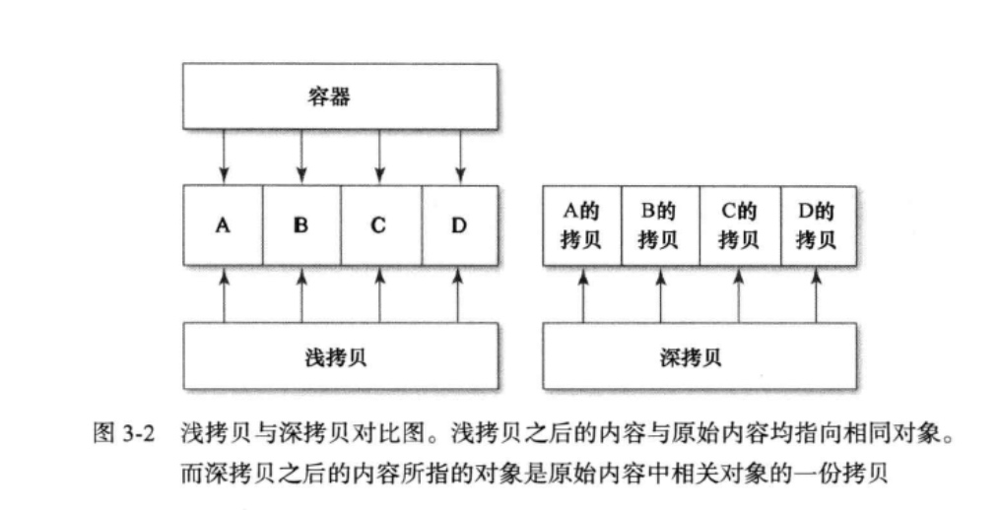

使用对象时经常需要拷贝它。在Objective-C中，此操作通过copy方法完成。如果想令自己的类支持拷贝操作，那就要实现NSCopying协议，该协议只有一个方法：
-(id)copyWithZone:(NSZone*)zone
为何会出现NSZone呢？因为以前开发程序时，会据此把内存分成不同的“区”（zone), 而对象会创建在某个区里面。现在不用了，每个程序只有一个区：“默认区”（default zone)。 所以说，尽管必须实现这个方法，但是你不必担心其中的zone参数。
copy方法由NSObject实现，该方法只是以“默认区”为参数来调用“copyWithZone:”。 我们总是想覆写copy方法，其实真正需要实现的却是“copyWithZone:”方法。这里我们一定要注意。
若想使某个类支持拷贝功能，只需声明该类遵从NSCopying协议，并实现其中的那个方法即可。比方说，有个表示个人信息的类，可以在其接口定义中声明此类遵从 NSCopying 协议：
#import <Foundation/Foundation.h>
@interface EOCPerson : NSObject <NSCopying>
@property (nonatomic, copy, readonly) NSString *firstName;
@property (nonatomic, copy, readonly) NSString *lastName;
-(id)initWithFirstName:(NSString*)firstName
andLastName: (NSString*)lastName;
@end
然后，实现协议中规定的方法：
-(id)copyWithZone:(NSZone*)zone {
EOCPerson *copy = [[[self class] allocWithZone:zone]
initWithFirstName :_firstName
andLastName:_lastName];
return copy;
}
当然我们又是也要考虑具体情况，除了要拷贝对象，还要完成其他一些操作，比如类对象中的数据结构可能并未在初始化方法中设置好，需要另行设置。
#import <Foundation/Foundation.h>
@interface EOCPerson : NSObject<NSCopying>
@property (nonatomic, copy, readonly) NSString *firstName;
@property (nonatomic, copy, readonly) NSString *lastName;
-(id)initWithFirstName: (NSString*) firstName
andLastName:(NSString*)lastName;
-(void)addFriend:(EOCPerson*)person;
-(void)removeFriend:(EOCPerson*)person;
@end
@implementation EOCPerson {
NSMutableSet *_friends;
)
- (id)initWithFirstName: (NSString*) firstName
andLastName:(NSString*)lastName {
if ((self = [super init])) {
_firstName = [firstName copy];
_lastName = [lastName copy];
_friends = [NSMutableSet newJ;
}
return self;
}
-(void)addFriend:(EOCPerson*)person {
[_friends addObject:person];
}
-(void)removeFriend:(EOCPerson*)person {
[_friends removeObject:person];
}
-(id)copyWithZone:(NSZone*)zone {
EOCPerson *copy =[[[self class] allocWithZone:zone]
initWithFirstName: _firstName
andLastName:_lastName];
copy->_friends = [_friends mutableCopy];
return copy;
}
@end
这次所实现的方法比原来多了一些代码，它把本对象的_friends实例变量复制了一份, 令copy对象的_frieiids实例变量指向这个复制过的set。注意，这里使用了->语法，因为_friends并非属性，只是个在内部使用的实例变量。其实也可以声明一个属性来表示它，不过由于该变量不会在本类之外使用，所以那么做没必要。
我们在上面发现了一个mutableCopy方法，此方法来自另一个叫做NSMutableCopying的协议。该协议与NSCopying类似，也只定义了一个方法，然而方法名不同：
- (id)mutableCopyWithZone:(NSZone*)zone
mutableCopy这个“辅助方法”（helper)与copy相似，也是用默认的zone参数来调“mutableCopyWithZone:”。如果你的类分为可变版本（mutable variant)与不可变版本 (immutable variant),那么就应该实现NSMutableCopying。若采用此模式，则在可变类中覆写“copyWithZone:”方法时，不要返回可变的拷贝，而应返回一份不可变的版本。无论当前实例是否可变，若需获取其可变版本的拷贝，均应调用mutableCopy方法。同理，若需要不可变的拷贝，则总应通过copy方法来获取。
对于不可变的NSArray与可变的NSMutableArray来说，下列关系总是成立的：
-[NSMutableArray copy] =>NSArray
-[NSArray mutableCopy】 =>NSMutableArray
所谓我们会发现：在可变对象上调用copy方法会返冋另外一个不可变类的实例。这样做是为了能在可变版本与不可变版本之间自由切换。
浅拷贝与深拷贝
在编写拷贝方法时，还要决定一个问题，就是应该执行“深拷贝”（deep copy)还是“浅拷贝”（shallow copy)。深拷贝的意思就是：在拷贝对象自身时，将其底层数据也一并复制过 去。Foundation框架中的所有collection类在默认情况下都执行浅拷贝，也就是说，只拷贝容器对象本身，而不复制其中数据。这样做的主要原因在于，容器内的对象未必都能拷贝，而且调用者也未必想在拷贝容器时一并拷贝其中的每个对象。

一般情况下，我们会遵照系统框架所使用的那种模式，在自定义的类中以浅拷贝的方式实现“copyWithZone:”方法。但如果有必要的话，也可以增加一个执行深拷贝的方法。以 NSSet为例，该类提供了下面这个初始化方法，用以执行深拷贝：
-(id)initWithSet:(NSArray*)array copyltems:(BOOL)copyltems
若copyltem参数设为YES,则该方法会向数组中的每个元素发送copy消息，用拷贝好的元素创建新的set,并将其返回给调用者。
在EOCPerson那个例子中，存放朋友对象的set是用“ copyWithZone:”方法来拷贝的， 根据刚才讲的内容可知，这种浅拷贝方式不会逐个复制set中的元素。若需要深拷贝的话, 则可像下面这样，编写一个专供深拷贝所用的方法：
-(id)deepCopy {
EOCPerson *copy =[[[self class] alloc]
initWithFirstName:_firstName
andLastName:_lastName];
copy->_friends = [[NSMutableSet alloc] initWithSetfriends copyltems:YES];
return copy;
}
因为没有专门定义深拷贝的协议，所以其具体执行方式由每个类来确定，你只需决定自 己所写的类是否要提供深拷贝方法即可。另外，不要假定遵从了 NSCopying协议的对象都会执行深拷贝。在绝大多数情况下，执行的都是浅拷贝。如果需要在某对象上执行深拷贝，那 么除非该类的文档说它是用深拷贝来实现NSCopying协议的，否则，要么寻找能够执行深拷贝的相关方法，要么自己编写方法来做。
要点
- 若想令自己所写的对象具有拷贝功能，则需实现
NSCopying协议。 - 如果自定义的对象分为可变版本与不可变版本，那么就要同时实现
NSCopying与NSMutableCopying协议。 - 复制对象时需决定采用浅拷贝还是深拷贝，一般情况下应该尽量执行浅拷贝。
- 如果你所写的对象需要深拷贝，那么可考虑新增一个专门执行深拷贝的方法。